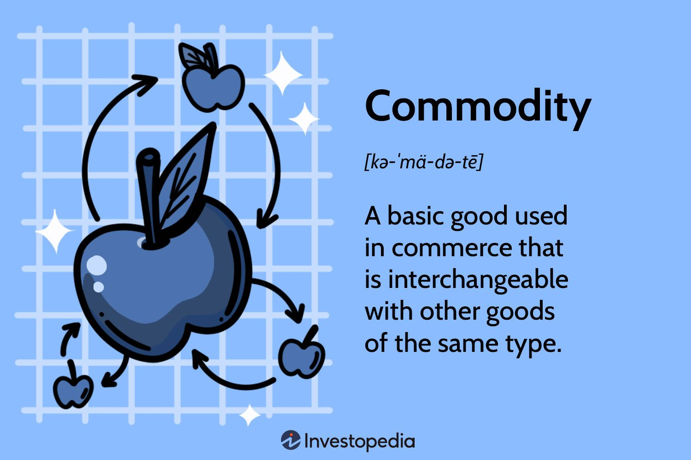

CashFlowAcademy
Home
Budgeting
Saving
Investing
Debt Management
Login
Commodities

Introduction to Commodities
Commodities are essential raw materials or primary agricultural products that play a crucial role in the global economy. They can be categorized into two main groups: hard commodities and soft commodities. Hard commodities include natural resources such as gold, silver, crude oil, and industrial metals like copper and aluminum. Soft commodities, on the other hand, encompass agricultural products such as wheat, corn, soybeans, coffee, and sugar. The commodity market allows producers and consumers to hedge against price fluctuations by using commodity futures contracts. Investors can participate in the commodities market through various means, such as purchasing physical commodities, investing in commodity-focused stocks, or trading commodity futures and options.
Investment in Commodities
Commodities have emerged as an attractive investment option for diversifying portfolios and hedging against inflation. As a tangible asset class, commodities tend to retain value during economic downturns and can act as a hedge against currency depreciation. Investors seeking to preserve purchasing power and mitigate the impact of rising prices often allocate a portion of their portfolio to commodities. Additionally, commodity investments offer unique benefits as they often exhibit low correlations with traditional financial assets like stocks and bonds. This low correlation means that commodities may move independently of other asset classes, providing diversification benefits. However, it's essential to recognize that commodity investments also come with risks, including price volatility, supply and demand dynamics, geopolitical events, and weather-related factors that can significantly impact commodity prices.
Ways to Invest in Commodities
There are multiple ways to invest in commodities, depending on an individual's risk tolerance and investment preferences. One straightforward approach is investing in physical commodities directly, where investors purchase and own the actual commodities themselves. For example, they might buy gold bullion or invest in agricultural land. However, this method may come with storage and logistics challenges. Another option is to invest indirectly in commodities through commodity-focused exchange-traded funds (ETFs) or mutual funds. These funds allow investors to gain exposure to a diversified basket of commodities without holding the physical assets directly. Additionally, commodity futures and options contracts provide another avenue for investors to participate in the commodities market. However, futures and options trading require a good understanding of the market and its intricacies due to their complex nature. Investors should carefully assess their risk tolerance, investment goals, and knowledge level before venturing into the commodities market and consider seeking advice from a financial professional.